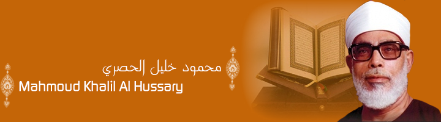

(1917-1980)
Born: September 17, 1917
Died: November 24, 1980
Full name: Shaykh Mahmoud Khalil al-Hussary
Religion: Sunni Islam
Nationality: Egyptian

Born: September 17, 1917
Known for: Accurate recitation of the Qur'an;
First person to record recitations in various styles of the entire
Qur'an;
President of the Qur'an Reciters Union;
Biogrpahy of Mahmoud Khalil Al Hussary
Mahmoud Khalil Al Hussary is a renowned reciter of the Holy Qur’an. He was born in a village called Shobra Al Namla in Tanta, Egypt.
Mahmoud entered the Qur’an School at the age of four. At 8, he had already memorized the whole Qur’an and at 12, he entered to the religious institute and learnt the ten recitations in Al Azhar.
Mahmoud Khalil Al Hussary first recited the Holy Qur’an in his village mosque. In 1944, he entered the official radio station as reciter where he made his first recitation on 16 February 1944. On August 7, 1948, he was nominated Muadhin (Prayer caller) of Sidi Hamza Mosque and then a reciter in the same mosque. He was also supervising recitation centers of Al Gharbia province.
In 1949, Mahmoud Khalil Al Hussary was appointed reciter of Sidi Ahmed Al Badaoui of Tanta , of Al Ahmadi Mosque and then of Al Imam Al Hussein Mosque in Cairo by 1955.
Mahmoud Khalil Al Hussary was one of the most esteemed reciters of his time. A serial, “Imam Al Moqr’ine”, starring Hassan Youssef, was dedicated to Al Hussary’s life and performances.
{kind=link}
{kind=link}
{kind=link}
{kind=link}
{kind=link}
{kind=link}
{kind=link}
{kind=link}
{kind=link}
{kind=link}
{kind=link}
{kind=link}